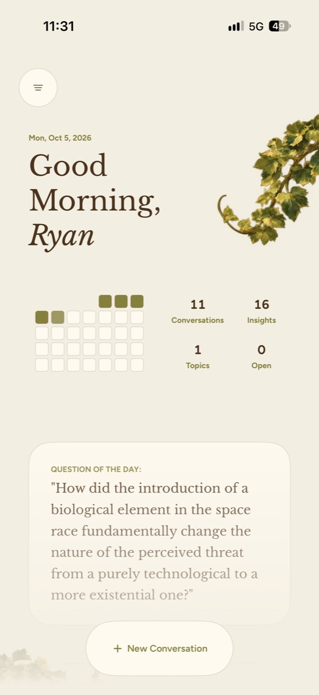
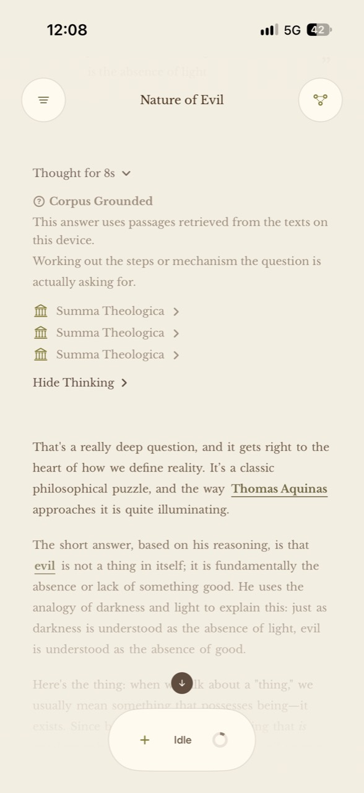
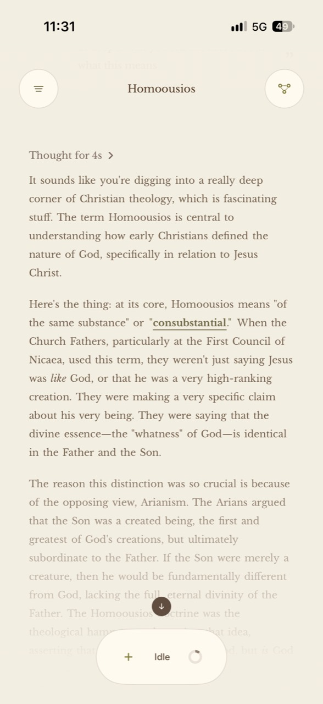

Exhibit I · Study software
A private study app for philosophy and theology. Conversations, notes, and saved ideas stay together on iPhone and Mac.
Visit angrove.appAngrove
Public betaon iPhone
The project
I design and build Angrove to give a study session somewhere to continue after the conversation ends. Source-backed answers lead to definitions you can save as Insights and revisit in a map. On Mac, Boards bring conversations, writing, and images into one workspace.
- Platform
- iPhone & Mac
- Built with
- SwiftUI, on-device AI
- My role
- Product direction, visual and interaction design, SwiftUI implementation
- Status
- Public beta on iPhone; Mac app coming December 15
Notes want a place, not a scroll.
How a study session works

01Start from Home. Recent activity, saved Insights, and a Question of the Day. 
02Ask with sources. Answers show the passages they draw on, such as the Summa Theologica. 
03Open a concept. Underlined terms open a definition in the context of the answer. 
04Keep it. Saved Insights return on a map of related ideas.
Room for a visual reference
An image shares the workspace with the writing. A Board can hold more than a sequence of chat messages, so an argument can take a shape on the page.
Design notes
From design to implementation
I own the product direction, visual and interaction design, and SwiftUI implementation, including the connections between the interface, local AI, and saved work.
Keep the way back within reach
Boards, conversations, the library, and study topics share one sidebar. Moving between kinds of work should never feel like leaving the room.
Test the default before choosing it
Before choosing Angrove’s reasoning default, I ran an 80-case evaluation. Both settings passed 74 of 80 cases, while reasoning roughly doubled latency, so I kept it off by default. This was a development configuration test, not a general accuracy claim.